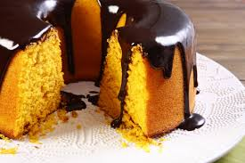

INGREDIENTES:
Massa:
- 1/2 Xícara (chá) de óleo
- 4 Ovos
- 2 e 1/2 Xícaras (chá) de farinha de trigo
- 3 Cenouras médias raladas
- 2 Xícaras (chá) de açúcar
- 1 Colher (sopa) de fermento em pó
Cobertura:
- 1 colher (sopa) de manteiga
- 1 xícara (chá) de açúcar
- 3 colheres (sopa) de chocolate em pó
- 1 xícara (chá) de leite
MODO DE PREPARO:
- Massa
- 1) Em um liquidificador, adicione a cenoura, os ovos e o óleo, depois misture.
- 2) Acrescente o açúcar e bata novamente por 5 minutos.
- 3) Em uma tigela ou na batedeira, adicione a farinha de trigo e depois misture novamente.
- 4) Acrescente o fermento e misture lentamente com uma colher.
- 5) Asse em um forno preaquecido a 180° C por aproximadamente 40 minutos.
- Cobertura
- 6) Despeje em uma tigela a manteiga, o chocolate em pó, o açúcar e o leite, depois misture.
- 7) Leve a mistura ao fogo e continue misturando até obter uma consistência cremosa, depois despeje a calda por cima do bolo.
IMAGENS:

